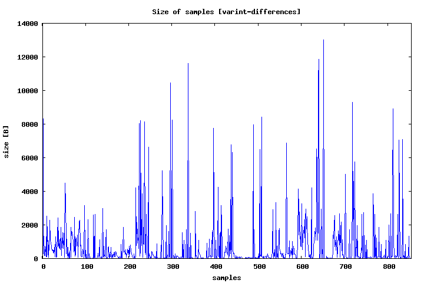
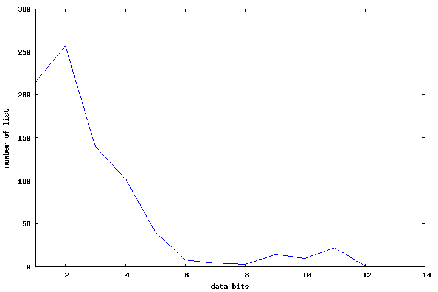

| Author: | Wojciech Muła |
|---|---|
| Added on: | 2013-11-23 |
| Update: | 2013-11-24 (minor updates), 2013-12-01 (pair encoding) |
Russ Cox wrote very interesting article about algorithms behind service Google Code Search. In short: files are indexed with trigrams, the query string is split to trigrams and then an index is used to limit number of searched files.
Code search manages a reverse index — there is a file list, and for each trigram there is a list of file's id. I've interested how the list of file's id is stored on a disc. In the Russ implementation such list is built as follows:
The variable length integer is a byte-oriented encoding, similar to UTF-8, where each byte holds 7 bit of data and 1 bit (MSB) is used as the end-of-word marker. Thus smaller values require less bytes: integers less than 128 occupy 1 byte, less than 16384 occupy 2 bytes, and so on.
Important: lists of file's id are encoded independently, because of that it is not possible to use any common attributes to increase compression.
Downside of byte-oriented encoding is wasting bits if values are small. For example list of id:
[10000, 10001, 10003, 10004, 10006, 10007, 10009, 10010, 10017, 11500]
after calculating differences becomes:
[10000, 1, 2, 1, 2, 1, 2, 1, 7, 1488]
The first and the last value could be saved on 2 bytes, rest on 1 byte — total 12 bytes. Small values are stored on one byte, but in fact require 1, 2 or 3 bits, so 5-7 bits in a byte are unused.
It's possible to efficient encode such subset of small values on a bitset of constant size. Difference between each value and the first value ("head") are encoded as bit positions. For subset:
[10000, 10001, 10003, 10004, 10006, 10007, 10009, 10010, 10017]
we have:
Instead of 12 bytes we got 2 + 4 + 2 = 8. Of course for longer subsets results are better, in the best case we can encode one value using just one bit; however, for subsets smaller than 6 elements this operation has no sense.
Note: There is an encoding scheme called Simple9 (see the first position in bibliography) that can achieve similar compression ratio, but Simple9 requires a 4-bit header per 28-bit data word, thus compression ratio in the same scenario would be smaller.
I've checked two methods:
Although first match seems to be "too easy", this method gives better compression ratio than greedy. Moreover is very fast and simple to implement. Greedy is very, very slow — well maybe some kind of dynamic programming would help, but this wasn't the main subject of research, so I left it "as is".
All results presented here use first match searching.
Varnibble encoding is similar to varint, in this case we operate on 4-bit words instead of 8 bits — each word contains 3 bits of data and 1 bit of end-value marker. This encoding require some bit operations (shift, and, or) but with constant shifts amounts/masks, so this isn't as expansive as other bit-level encoding schemes.
Varnibble decreases mentioned earlier "bit-wasting" for small values.
This is generalization of varint and varnibble — the number of data bits can be arbitrary. Selecting the number of bits is done once for the whole sequence, this number is saved on one byte, then all elements are encoded.
There is compression method called "byte pair encoding", in pair encoding 'values' are used instead of bytes. Algorithm:
A set of trigrams and associated file's id were collected from subtree of Linux source. Each list was saved in a separate file, then I picked some of them. Here are some statistics about lists:
The plot shows size of lists encoded as differences with varint. Most of them are quite short, only few are long.
The total size of all lists:
It's clear that using differences can save up to 50% of space, so other methods always use differences instead of plain values. Results for differences encoded with varint (called for short varint diff) are set as reference.
Comparisons with other methods are done for following properties:
This algorithm finds the minimum number of bits required to save the largest value from single list. Then each value is saved on a bitfield of the calculated width.
Algorithm:
| count | count [%] | size [B] | size [%] | ||
|---|---|---|---|---|---|
| greater | 369 | 43.26 | 121,264 | 21.61 | 25.04 |
| equal | 49 | 5.74 | 19,240 | 3.43 | |
| less | 435 | 51.00 | 420,537 | 74.96 | |
| total size | 561,041 | ||||
| improvement | 90.31% | ||||
| count | count [%] | size [B] | size [%] | ||
|---|---|---|---|---|---|
| greater | 48 | 5.63 | 766 | 0.20 | 0.52 |
| equal | 82 | 9.61 | 1,234 | 0.32 | |
| less | 723 | 84.76 | 385,867 | 99.48 | |
| total size | 387,867 | ||||
| improvement | 62.44% | ||||
Encoding is done in two steps:
| count | count [%] | size [B] | size [%] | ||
|---|---|---|---|---|---|
| greater | 461 | 54.04 | 66,427 | 17.78 | 18.68 |
| equal | 101 | 11.84 | 3,329 | 0.89 | |
| less | 291 | 34.11 | 303,752 | 81.32 | |
| total size | 373,508 | ||||
| improvement | 60.13% | ||||
| count | count [%] | size [B] | size [%] | ||
|---|---|---|---|---|---|
| greater | 372 | 43.61 | 34,494 | 9.43 | 10.34 |
| equal | 62 | 7.27 | 3,322 | 0.91 | |
| less | 419 | 49.12 | 327,922 | 89.66 | |
| total size | 365,738 | ||||
| improvement | 58.88% | ||||
Varnibble is a bit better than varint backend, however the number of samples greater/equal is significant in both cases.
As we saw subsets methods are not always better, so there is a room for some improvement. This method is combination of two encodings: method 3 with varint or varnibble encoding.
List of integers is encoded using subsets method and also with varint/varnibble, then shorter form is saved.
We need to save which method is used, this require just one bit — the first element of list is multiplied by 2 and the lowest bit is set/unset depending of the selected method. This solution is cheap, because in the worst case costs an additional byte/nibble, while in average case increase compression ratio.
| count | count [%] | size [B] | size [%] | ||
|---|---|---|---|---|---|
| greater | 0 | 0.00 | 0 | 0.00 | 17.63 |
| equal | 562 | 65.89 | 65,026 | 17.63 | |
| less | 291 | 34.11 | 303,752 | 82.37 | |
| total size | 368,778 | ||||
| improvement | 59.36% | ||||
| count | count [%] | size [B] | size [%] | ||
|---|---|---|---|---|---|
| greater | 48 | 5.63 | 766 | 0.23 | 0.59 |
| equal | 82 | 9.61 | 1,234 | 0.37 | |
| less | 723 | 84.76 | 335,743 | 99.41 | |
| total size | 337,743 | ||||
| improvement | 54.37% | ||||
Selecting number of data bits is done in straightforward way: encode data on bits 1..16, then the best one is picked:
For sample set of data, optimal number of bits is usually smaller than 7 bits used by varint.
| count | count [%] | size [B] | size [%] | ||
|---|---|---|---|---|---|
| greater | 57 | 6.68 | 780 | 0.23 | 0.53 |
| equal | 71 | 8.32 | 1,032 | 0.30 | |
| less | 725 | 84.99 | 339,788 | 99.47 | |
| total size | 341,600 | ||||
| compression | 54.99% | ||||
New values for pair numbers are selected starting from 1, excluding already used values that present in a sequence. Each pair is saved as three values: (pair number, value 1, value 2). The end of a pair list is marked with value 0, then values from sequence are stored. Finally to save values varint and varnibble encoders were used.
Results for varint:
| count | count [%] | size [B] | size [%] | ||
|---|---|---|---|---|---|
| greater | 652 | 76.44 | 131,606 | 29.65 | 29.83 |
| equal | 4 | 0.47 | 806 | 0.18 | |
| less | 197 | 23.09 | 311,480 | 70.17 | |
| total size | 443,892 | ||||
| compression | 71.46% | ||||
Results for varnibble:
| count | count [%] | size [B] | size [%] | ||
|---|---|---|---|---|---|
| greater | 167 | 19.58 | 30,823 | 7.36 | 8.43 |
| equal | 61 | 7.15 | 4,471 | 1.07 | |
| less | 625 | 73.27 | 383,365 | 91.57 | |
| total size | 418,659 | ||||
| compression | 67.39% | ||||
| # | method | size | improvement | ||
|---|---|---|---|---|---|
| a | 0 | varint - reference | 621,208 | 100.00% | =================================== |
| b | 1 | bitfields | 561,041 | 90.31% | =============================== |
| c | 2 | varnibble | 387,867 | 62.44% | ===================== |
| d | 3 | subsets [varnibble] | 365,738 | 58.88% | ==================== |
| e | 3 | subsets [varint] | 373,508 | 60.13% | ===================== |
| f | 4 | subsets or varnibble | 337,743 | 54.37% | =================== |
| g | 4 | subsets or varint | 368,778 | 59.36% | ==================== |
| h | 5 | varbits | 341,600 | 54.99% | =================== |
| i | 6 | pair [varint] | 443,892 | 71.46% | ========================= |
| j | 6 | pair [varnibble] | 387,867 | 67.39% | ======================= |
Random thought:
All data and sources are available at github.